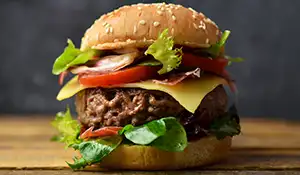
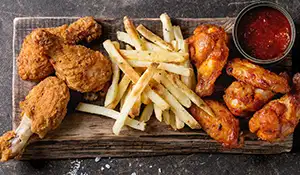
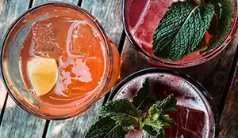
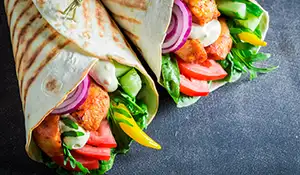
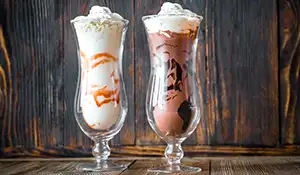

Menu
Burgers
Indulge in our mouthwatering burgers crafted with premium beef, grilled to perfection, and served on toasted brioche buns, guaranteeing a nostalgic culinary experience with every bite at Jukebox Junction Diner.
View BurgersSides
Complement your meal with our delicious selection of classic sides, including crispy golden fries, creamy coleslaw, and savory onion rings, adding the perfect finishing touch to your dining experience.
View SidesDrinks
Quench your thirst with our refreshing lineup of beverages, featuring hand-spun milkshakes, frosty sodas, and bottomless cups of freshly brewed coffee, ensuring there's a perfect drink to accompany every meal.
View DrinksWraps
Explore a lighter option with our flavorful wraps, bursting with fresh ingredients and wrapped in a soft tortilla, offering a delicious alternative for those craving a satisfying yet wholesome meal.
View WrapsShakes
Indulge in our signature shakes, handcrafted with premium ice cream and topped with whipped cream and a cherry on top, delivering a creamy and decadent treat that will transport you back to the nostalgic days of classic diners at Jukebox Junction Diner.
View Shakes